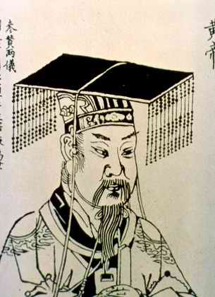
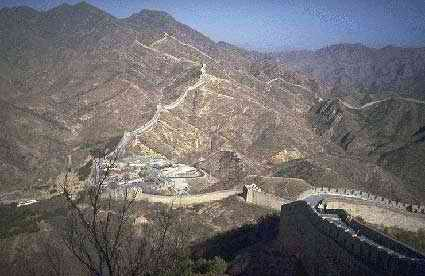

|
|
18 SHIH HUANG TI 259 SM-210 SM
Kaisar
Cina yang besar Shih Huang Ti dari tahun 238-210 SM
menyatukan Cina dengan kekuatan senjata dan meletakkan dasar
perombakan-perombakan. Perombakan ini merupakan faktor utama
dalam penyatuan kultural Tiongkok hingga kini.
Shih Huang Ti (juga terkenal dengan julukan Ch'in Shih
Huang Ti) dilahirkan tahun 259 SM dan wafat tahun 210 SM.
Untuk memahami arti penting pribadinya, kita perlu
mengetahui dulu latar belakang historis masanya. Dia lahir
di penghujung tahun dinasti Chou yang didirikan sekitar 1100
SM. Berabad sebelum masanya, dinasti Chou sudah kehilangan
keampuhannya selaku penguasa, dan Cina terpecah belah
menjadi banyak sekali negara-negara feodal.
Pelbagai raja-raja feodal ini tak henti-hentinya
bertempur satu sama lain, dan lambat laun beberapa penguasa
kecil melenyap. Salah satu dari negeri terkuat yang selalu
baku hantam itu Ch'in, di bagian Cina sebelah barat.
Pemimpin-pemimpin kerajaan Ch'in menganut mazhab filosofis
legalis yang dijadikan dasar negara. Kong Hu-Cu menganjurkan
agar penduduk diperintah lewat contoh suri teladan akhlak
dari pemimpinnya. Tetapi, menurut mazhab filosofi legalis,
rakyat tidak cukup baik diperintah lewat cara yang
ditunjukkan Kong Hu-Cu, karena itu tidak mungkin ditrapkan.
Mendingan, rakyat itu diawasi ketat lewat aturan-aturan
keras dan dipaksa tanpa pandang bulu. Hukum dan aturan
digariskan oleh penguasa dan penguasa dapat mengubah kalau
dia pandang perlu untuk kepentingan politik masa depan
negeri.
Bisa jadi akibat berpegang pada ide legalis, bisa jadi
juga karena letak posisi geografisnya, atau bisa jadi berkat
kemampuan kepemimpinan Ch'in, negeri itu menjadi negeri
paling kuat diantara negeri-negeri kerajaan di Cina pada
saat Cheng (keturunan Shih Huang Ti di masa depan) lahir.
Secara simbolis Cheng naik tahta pada tahun 246 SM pada umur
tigabelas tahun tetapi dalam praktek sebuah dewan memegang
pemerintahan hingga Cheng cukup dewasa di tahun 238 SM. Raja
baru itu mengangkat jendral-jendral yang berkemampuan dan
dengan semangat berkobar-kobar mengganyang negeri-negeri
feodal yang masih tinggal. Negeri feodal terakhir rontok
tahun 221 SM dan sesudah itu dia bisa memproklamirkan diri
selaku Wang (raja) seluruh Cina. Sekedar memberi bobot,
dalam rangka usahanya memutus hubungan dengan masa lampau,
dia memakai gelar baru dan menyebut dirinya Shih Huang Ti
yang maknanya "Kaisar pertama."
Shih Huang Ti segera bergegas melakukan
perubahan-perubahan besar. Berdasar tekad mencegah
cerai-berainya lagi Cina yang telah merusakkan kerajaan
Chou, dia memutuskan menghapus habis seluruh sistem
pemerintahan feodal. Wilayah yang dikuasainya dibagi-baginya
menjadi 36 propinsi, dan pada tiap propinsi diangkat seorang
gubernur sipil yang langsung ditunjuk oleh kaisar. Shih
Huang Ti mengeluarkan dekrit bahwa gubernur propinsi
tidaklah lagi berdasar keturunan. Akibat dari keputusan ini,
terjadilah kebiasaan memindah-mindahkan gubernur dari satu
propinsi ke propinsi lain untuk mencegah kemungkinan
timbulnya pejabat daerah yang ambisius dan menyusun basis
kekuatan untuk kepentingan dirinya sendiri. Tiap propinsi
juga punya pimpinan militer, ditunjuk oleh kaisar dan
sewaktu-waktu bisa dipindah kapan saja dia berkenan. Di
samping itu ditunjuknya pula pejabat ketiga untuk memelihara
keseimbangan antara gubernur sipil dan gubernur militer. Dia
membangun jalan raya yang panjang dan rapi menghubungkan
ibukota dengan kota-kota propinsi. Jalan raya itu dibangun
sedemikian rupa --di samping arti ekonomisnya-- juga
sewaktu-waktu dapat digunakan untuk gerakan tentara pusat ke
daerah-daerah yang kalau-kalau banyak tingkah dan coba-coba
bikin ulah yang bisa mengganggu keutuhan dan kestabilan
kekuatan pusat. Shih Huang Ti pun tak lupa mengumumkan
aturan bagi aristokrat-aristokrat lama yang masih hidup
harus menetap di ibukota Hsieng yang dengan maksud supaya
mereka dapat dengan mudah diawasi gerak-geriknya.
Tetapi, Shih Huang Ti tidaklah puas hingga di situ. Dia
tidak puas hanya sampai urusan persatuan politik dan militer
semata, tetapi juga berusaha menggalang kesatuan ekonominya.
Dia menentukan norma-norma ukuran baik untuk berat timbangan
maupun panjang sesuatu barang. Dia menetapkan standar mata
uang, macam-macam peralatan, lebar serta panjang kendaraan
dan mengawasi konstruksi jalan raya dan saluran-saluran air.
Dan dia juga menetapkan sistem hukum yang seragam untuk
seluruh Cina berikut standar bahasa tulisan.
Perbuatan kaisar yang paling termasyhur (atau barangkali
yang paling tidak populer) adalah peraturan yang
dikeluarkannya tahun 213 SM yang mengharuskan bakar semua
buku di Cina, kecuali buku-buku yang berkaitan dengan
masalah pertanian, kedokteran, catatan sejarah mengenai
negara Ch'in dan buku-buku falsafah yang ditulis oleh
pengarang-pengarang penganut faham legalis. Selebihnya
--tidak kecuali buku-buku doktrin Kong Hu-Cu-- mesti
dimusnahkan. Dengan dikeluarkannya aturan yang kelewatan ini
mungkin merupakan contoh pertama adanya sensor besar-besaran
dalam sejarah. Dia bermaksud melabrak habis
filosofi-filosofi lawannya, khususnya faham Kong Hu-Cu.
Tetapi, Shih Huang Ti memerintahkan mengkopi buku-buku yang
dilarang dan disimpan di perpustakaan di ibukota.
Politik luar negerinya tak kurang keras serta kuatnya.
Dia melakukan penaklukan di bagian selatan Cina, dan
daerah-daerah yang ditaklukkan dimasukkan ke dalam wilayah
Cina. Juga di utara dan di barat pasukannya berhasil, namun
dia tidak mampu menundukkan penduduknya secara permanen.
Untuk mencegah jangan sampai mereka menyerang Cina, Shih
Huang Ti menghubungkan pelbagai dinding lokal yang memang
sudah ada di perbatasan Cina utara sehingga menjadi jalur
tembok raksasa. Tembok besar Cina itu masih utuh terdapat
hingga kini. Konstruksi proyek ini berikut
pertempuran-pertempuran dengan pihak luar, membebankan
penduduk dengan pajak tinggi, dan ini membuatnya tidak
populer. Karena pemberontakan melawan pemerintahan tangan
besinya tidak mungkin, serangkaian perbuatan dilakukan orang
untuk menghabiskan nyawanya. Tetapi, tak satu pun usaha
pembunuhan ini yang berhasil, dan Shih Huang Ti mati secara
wajar tahun 210 SM.

Tembok Besar China
Kaisar digantikan putera keduanya bergelar Erh Shih Huang
Ti. Tetapi, sang anak tidak memiliki kemampuan sang ayah,
karena itu beberapa pemberontakan pun meletus. Dalam tempo
empat tahun dia terbunuh. Perpustakaan kerajaan
dibumihangus, dan dinasti Ch'in sepenuhnya ditumbangkan.
Namun, karya usaha Shi Huang Ti yang sudah
dirampungkannya bukanlah hal yang percuma. Orang Cina memang
bersenang hati pemerintahan tiraninya sudah berakhir,
tetapi, ada sebagian kecil yang berhasrat kembali ke suasana
anarki seperti masa lampau. Dinasti berikutnya (dinasti Han)
meneruskan sistem dasar administratif yang ditegakkan oleh
Ch'in Shih Huang Ti. Dan memang dalam kenyataannya,
sepanjang dua puluh satu abad kekaisaran Cina melanjutkan
garis-garis yang sudah diletakkan. Meskipun sistem hukum
Ch'in yang keras segera dilunakkan oleh para kaisar dinasti
Han, dan biarpun keseluruh filosofi legalis sudah dijauhi
dan Confucianisme menjadi lagi falsafah negara, penyatuan
politik dan kultural yang sudah dibangun oleh Shih Huang Ti
tidaklah luntur.
Secara keseluruhan, makna penting Shih Huang Ti untuk
Cina sudahlah terang benderang. Orang-orang Barat senantiasa
terpukau oleh besarnya ukuran Cina, tetapi umumnya sepanjang
sejarah sebenarnya tidaklah lebih besar penduduknya
ketimbang Eropa. Perbedaannya adalah, Eropa senantiasa
terpecah-pecah menjadi negara kecil-kecil sedangkan Cina
dipersatukan menjadi sebuah negeri besar. Perbedaan ini
tampak berkat faktor-faktor politik dan sosial, bukannya
lantaran faktor geografi, misalnya dalam hal jarak panjang
pegunungan di Cina tidaklah banyak beda dengan apa yang ada
di Eropa. Karuan saja, penyatuan Cina tidaklah bisa dianggap
semata-mata kerja Shih Huang Ti seorang. Banyak orang
--misalnya Sui Wen Ti-- juga memainkan peranan penting,
tetapi tidaklah perlu diragukan lagi Shih Huang Ti yang
paling penting dari yang penting. Dialah titik
sentralnya.
Berbicara tentang Shih Huang Ti tidaklah tuntas sempurna
tanpa menyebut-nyebut perdana menterinya yang cerdas dan
hebat, Li Ssu. Memang, begitu pentingnya pengaruh Li Ssu
terhadap pengambilan keputusan kaisar sehingga sulit
membedakan mana yang lebih menentukan diantara keduanya
menyangkut perubahan-perubahan besar yang terjadi. Untuk
terhindar dari kesulitan tilik sana tilik sini, saya
menetapkan semua jasa-jasa perbuatan gabungan mereka kepada
Shih Huang Ti. (Lagi pula, biarpun Li Ssu mengajukan
nasehat, kata terakhir ada pada kaisar).
Shih Huang Ti, antara lain akibat perbuatan membakar
buku-buku, dikutuk oleh umumnya penulis-penulis berfaham
Kong Hu-Cu di belakang hari. Mereka mengutuknya sebagai
tiran, kedukun-dukunan, penuh takhyul, jahanam, anak sundal
dan berkemampuan kepalang tanggung. Sebaliknya, Cina Komunis
umumnya memujanya selaku pemikir progresif. Penulis-penulis
Barat kadangkala membandingkan Shih Huang Ti dengan
Napoleon. Tetapi, tampaknya dia lebih mirip dengan Augustus
Caesar, pendiri kekaisaran Romawi. Empirium yang mereka
dirikan sedikit banyak punya kemiripan dalam ukuran luas
daerah dan jumlah penduduk. Bedanya, empirium Romawi berdiri
jauh lebih singkat dan daerah yang diperintah oleh August
Caesar tidak mampu dipersatukan dalam jangka waktu lama.
Tidaklah demikian pada Shih Huang Ti. Itu sebabnya Shih
Huang Ti lebih punya pengaruh ketimbang Augustus Caesar.
|